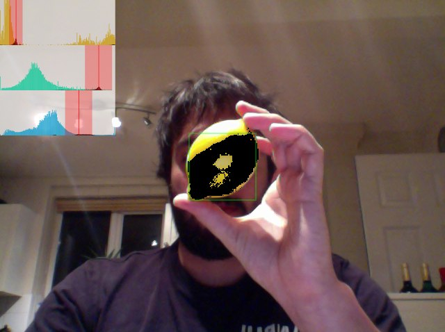

Baubler.benjaminbenben.com
- Grab a colourful object
- Hit record!
- Calibrate an object by holding in the green square (the selected pixels should go black). When you are happy - click the 'calibrate' checkbox.

- To submit a line, start in the bottom left box, do some art, then end in the bottom right.
- Draw!